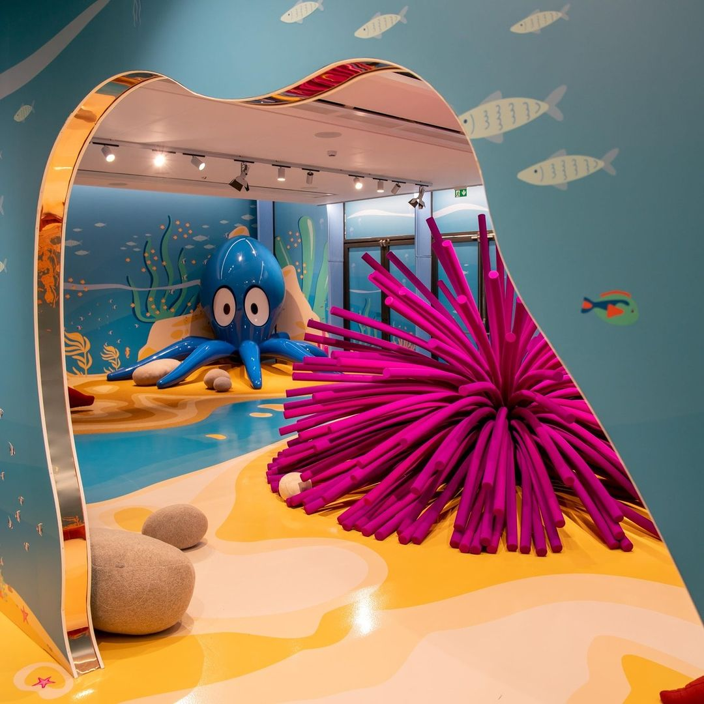
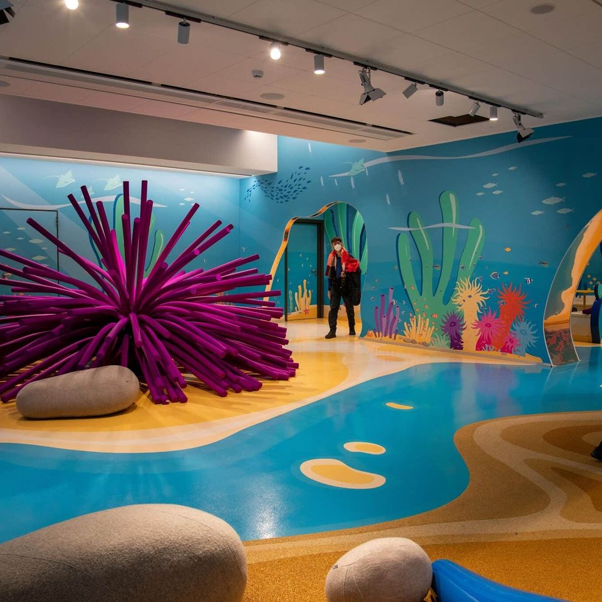
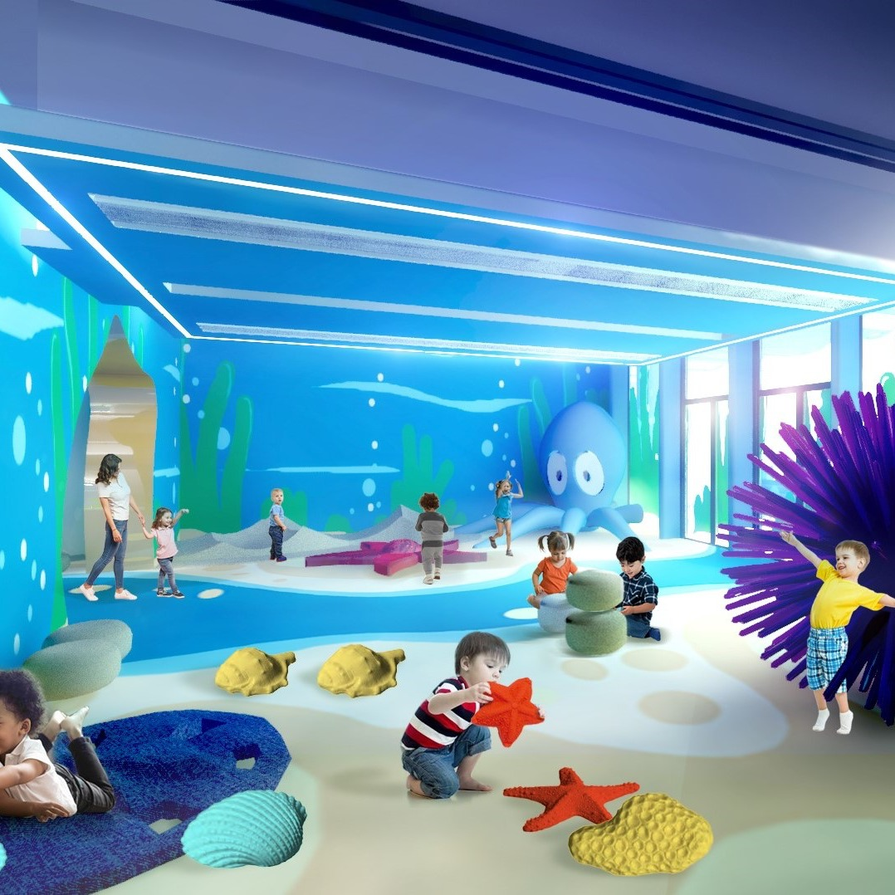
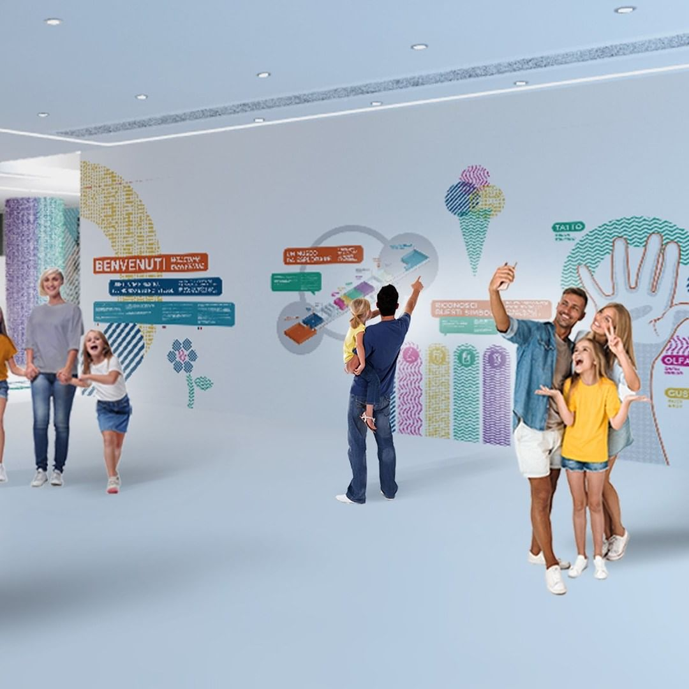
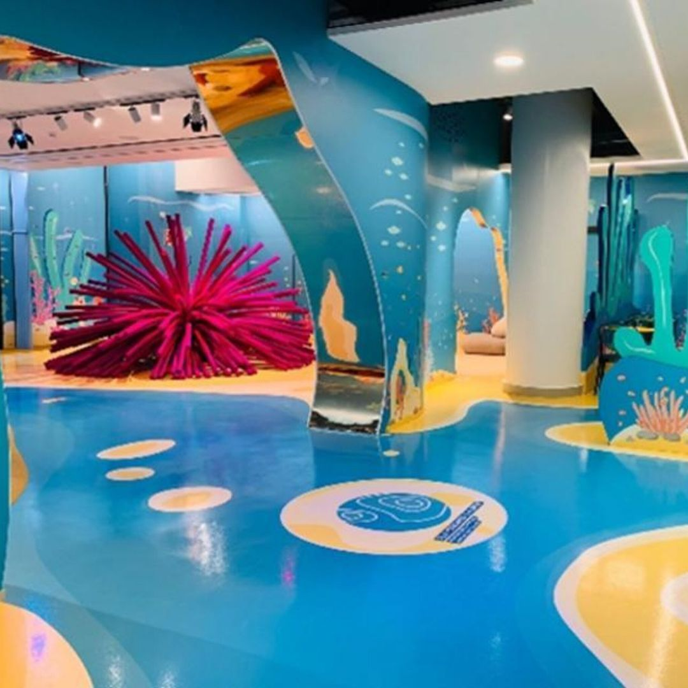

Museums · Genova · Edutainment
Città dei Bambini
e dei Ragazzi
Cristian Taraborrelli ha firmato le scenografie del primo museo dell’esperienza italiano dedicato ai 5 sensi, su incarico di Filmmaster Events con la direzione creativa di Alfredo Accatino.
Il progetto ha combinato lavorazione artigianale — sculture di lingua e naso — con la sperimentazione del robot Kuka per la modellazione, creando ambienti scenici pensati per stimolare tutti e cinque i sensi dei visitatori.
Cristian Taraborrelli designed the scenography for Italy’s first experience museum dedicated to the five senses, commissioned by Filmmaster Events under the creative direction of Alfredo Accatino.
The project combined artisan craftsmanship — tongue and nose sculptures — with experimentation using the Kuka robot for modelling, creating scenic environments designed to stimulate all five senses of visitors.
Cristian Taraborrelli a signé les décors du premier musée de l’expérience italien dédié aux cinq sens, commandé par Filmmaster Events sous la direction créative d’Alfredo Accatino.
Le projet a combiné un travail artisanal — sculptures de langue et de nez — avec l’expérimentation du robot Kuka pour la modélisation, créant des environnements scéniques conçus pour stimuler les cinq sens des visiteurs.
Press
"La direzione artistica del primo museo dell'esperienza italiano dedicato ai 5 sensi si è avvalsa dell'elegante tocco di Cristian Taraborrelli, lo scenografo che aveva inaugurato l'ultima stagione del Carlo Felice…"
La Repubblica
"Cristian Taraborrelli è un'eccellenza nel mondo del teatro ed è stato un piacere chiamarlo e lavorare con lui."
Alfredo Accatino, Creative Director — Filmmaster Events
Leggi l'articolo ↗Gallery





Tags